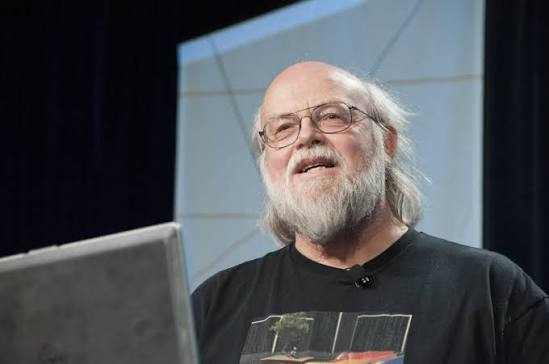

Введение

19.05.1955
Джеймс Гослинг (англ. James Gosling; род. 19 мая 1955[2], Калгари, Альберта, Канада) — канадский информатик, программист; автор[1] объектно-ориентированного и кросс-платформенного языка программирования Java[3]. Кроме того, является создателем оконной системы NeWS, Gosling Emacs, а также был одним из разработчиков Star Seven.Гослинг получил степень бакалавра по информатике в Университете Калгари в 1977 году, а затем — магистра и доктора философии в Университете Карнеги-Меллон (Carnegie Mellon University) в 1983 году . Тема его докторской диссертации — «The Algebraic Manipulation of Constraints» . Ещё во время учёбы в Карнеги-Меллон он: написал версию редактора Emacs, известную как Gosmacs (Gosling Emacs); создал многопроцессорную версию UNIX для 16-процессорной системы ; разработал несколько компиляторов и почтовых систем .Именно работа над эмуляцией p-кода UCSD Pascal для PERQ на DEC VAX вдохновила его на идею виртуальной машины Java — концепции «пиши один раз, запускай где угодно» .